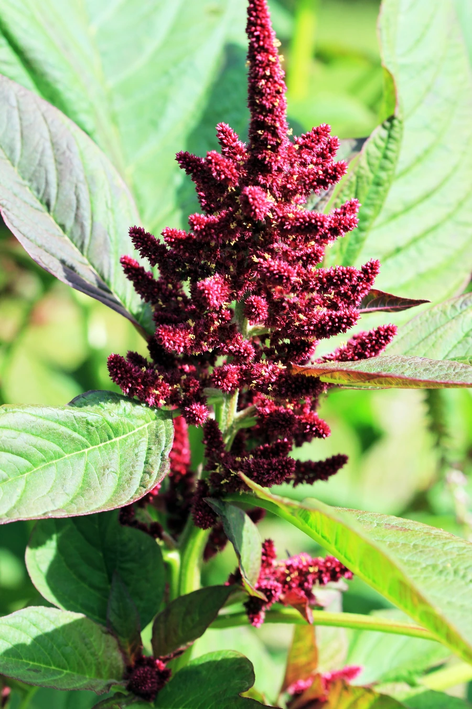

农作物与经济植物 · 植物界
籽粒苋 Amaranthus hypochondriacus

籽粒苋的种子和嫩叶都可食用，蛋白质含量高，生长快、适应性强，是兼具粮食、饲料和绿肥用途的作物。
- 分类
- 门被子植物门纲双子叶植物纲目石竹目科苋科属苋属
- 栖息环境
- 温暖干旱的平原与山地，耐旱耐瘠薄，适应性强
- 地理分布
- 原产中美洲与南美洲，现世界各地引种栽培
- 保护级别
- 暂无评估（栽培作物）
物种志
籽粒苋是一年生草本，株高 1–2.5 m，茎直立、粗壮，有分枝。叶片宽卵形或披针形，互生。花小、密集，圆锥花序顶生，呈穗状，颜色有红、绿、黄等，种子极小，圆球形，颜色有白、黄、黑等。它生长迅速，生物量大。
籽粒苋原产中美洲与南美洲，是古美洲原住民的粮食作物之一，后引种到世界各地。它喜温暖、光照充足，耐旱、耐瘠薄，适应性极强，适宜在瘠薄旱地种植。种子富含蛋白质、赖氨酸和钙，可煮粥、磨粉、做膨化食品；嫩叶可作蔬菜，茎叶是优质饲料，也可作绿肥。籽粒苋生长快、产量高，在旱作农业和饲草生产中很有潜力。中国北方与西南有栽培。
形态与习性
- 株高1–2.5 m
- 花序圆锥花序，呈穗状
- 种子极小，圆球形
- 营养蛋白质、赖氨酸与钙含量高
- 用途粮食、蔬菜、饲料与绿肥
趣味知识
- 籽粒苋的种子极小，但蛋白质和赖氨酸含量高。
- 籽粒苋生长快、产量高，是旱作农业和饲料的好选择。
- 它的嫩叶可作蔬菜，茎叶可作饲料和绿肥。